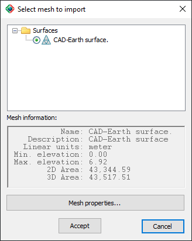
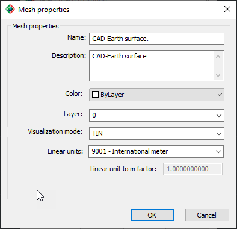

|
|
Toolbar:
Menu: CAD-Earth > Mesh commands > Import mesh from LandXML
|
|
|
Command line: CE_MESHFROMLANDXML Prompts:
Select XML file: CAD-Earth version: Plus, Premium. |
.png)
.png)
Command description:
Using this command you can import surfaces from other software applications that can save surface information to a LandXML file such as Civil 3D©. The imported mesh is 100% compatible with CAD-Earth commands. If there's valid surface information a dialog box will be displayed showing the surfaces available to import and their general information.

Import mesh from LandXML dialog box
Dialog box setting (Mesh properties)

Mesh properties dialog box.
ØMesh properties.
•Name. Enter text to identify the mesh. Must not contain the following characters: | * : ; > < ? , = ` \
•Description. Enter additional information about the mesh (optional).
•Color. Select the color for the mesh lines and points.
•Layer. Select the layer where the mesh will be created.
•Visualization mode. The mesh can be displayed in any of the following visualization modes:
TIN: Mesh triangles with continuous lines.
Points: Mesh vertices will be shown as simple points with no size.
Boundary & Points: Triangle sides which are not adjoined to another triangle will be shown. Internal vertices will be displayed as simple points with no size.
Boundary Only: Only triangle sides which are not adjoined to another triangle will be shown, creating one or several outlines.
•Linear units. The distance unit selected will define the mesh scale factor. If the required unit is not included in the list, you can select 'Custom' at the end of the list to define a unit conversion factor.
•Linear unit to m factor. The units of measure used by CAD-Earth are meters, which are converted to the unit selected using this factor to display distance, area and volume calculations.
Tips:
•To export a surface to a LandXML file in Civil 3D, do the following:
1.In Toolspace, on the Prospector tab, expand the Surfaces collection, right-click the surface, and click Export LandXML. The Export To LandXML dialog box is displayed with the current surface selected for export.
2.To change the export selection set (for example, to add another surface), select or clear the check boxes in the data tree.
3.Click OK to export the surface to a LandXML format file.
4.In the Export LandXML dialog box, enter the name for the LandXML file.
5. The file will be saved with the .xml extension. This file can be imported using this CAD-Earth command.
•If you open a drawing containing the mesh in another computer that doesn't have CAD-Earth installed, you must include the file CVLC_PointGroup.dbx (located in the CAD-Earth installation folder) in the same path as the drawing and load it with the APPLOAD command.
Related topics:
•Import terrain mesh from Google Earth.
•Export terrain mesh to LandXML
Copyright © 2023 Arqcom Software
Google Earth© is a registered trademark of Google inc. All other trademarks are the property of their respective owners.